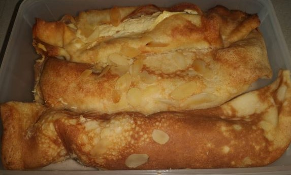

Topfenpalatschinken (Marco Maier)

Schwierigkeit:
Dauer:
Zutaten
Teig
- 3 Eier
- 1 TL Salz
- 300g Milch
- 150g Mehl
Oder
- 1 Ei
- 4 Eiweiß
- 1 TL Salz
- 280g Milch
- 200g Mehl
- ein bisschen Butterschmalz
Füllung
- 500g Magerquark
- 100g Zucker
- 4 Eigelb
- 10g Zitronensaft
- 10g Rum
- 1 Dose Manderinen
Verfeinerung
- 60g Rosinen
- 100g Sahne
- 2 EL Mandelblättchen
Zubereitung (Mit Thermomix)
Teig
- Zuerst alle Zutaten des Teiges in den Mixtopf geben und bei 20 Sek./ Stufe 4 rühren.
- 6-7 Palatschinken in einer Pfanne mit Butterschmalz backen, etwas abkühlen lassen.
Füllung
- Alle Zutaten der Füllung in den Mixtopf geben und bei 20 Sek./ Stufe 4 rühren.
- Die Manderinen in Stücke in die Füllung mit der Hand unterrühren.
- Eine Lasagneform mit Butter einstreichen und die Palatschinken mit der Füllung füllen.
- Die gefühlten Platschinken in die Lasagneformgeben.
Verfeinerung
- Die Palatschinken mit der ganzen Sahnen einstreichen und die Mandelblättchen in eine Pfanne ohne Öl rösten.
- Die gerösteten Mandeln auf die Palatschinken streuen und die Platschinken bei 180°, ca. 15min backen.
- Danach ca.10 - 15min ziehen lassen und dann genießen.